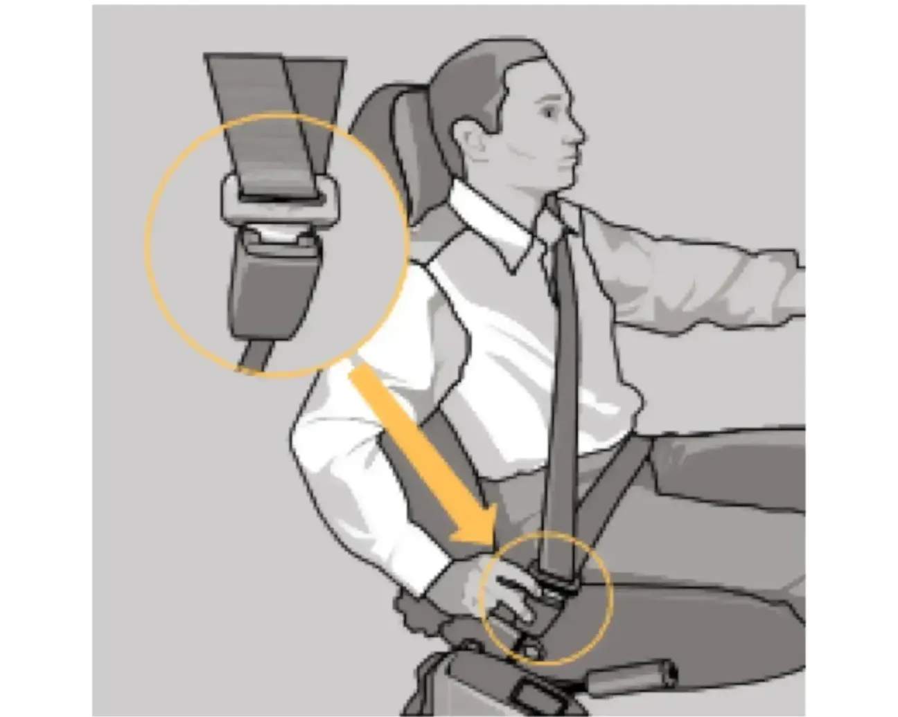

Ремни безопасности
Ремни безопасности являются эффективным средством защиты водителя и пассажиров от тяжёлых последствий дорожно-транспортного происшествия.

Чтобы пристегнуться ремнём, вытяните его из катушки и вставьте язычок в замок до щелчка, не допуская при этом скручивания лямок. Для отстёгивания ремня нажмите на кнопку замка.
Ремни передних сидений имеют регулировку положения верхней точки крепления по высоте. Чтобы ремень не касался шеи или не давил на плечо, отрегулируйте высоту крепления верхней точки.
Задние пассажиры пристёгиваются ремнями безопасности аналогично. Для среднего пассажира предусмотрен только бедренный ремень. Убедитесь, что задний бедренный ремень плотно прилегает к бёдрам. Не допускается, чтобы бедренная часть ремня проходила вокруг талии.
Беременные женщины должны пользоваться бедренно-плечевыми ремнями всегда, если это разрешает их доктор. Бедренная часть ремня должна находиться как можно ниже и удобнее.
В случае загрязнения лямок очищайте их мягким мыльным раствором. Гладить ленты утюгом не допускается. Ремень подлежит обязательной замене новым, если он подвергся критической нагрузке в дорожно-транспортном происшествии или имеет потёрости, разрывы и другие повреждения.
При движении на автомобиле обязательно пристёгивайтесь ремнём безопасности и не перевозите не пристёгнутых ремнём безопасности пассажиров!
Не пристёгивайте ремнём ребёнка, сидящего на коленях пассажира! Беременные женщины никогда не должны располагать бедренную часть ремня безопасности над областью живота, где находится плод, или над животом!